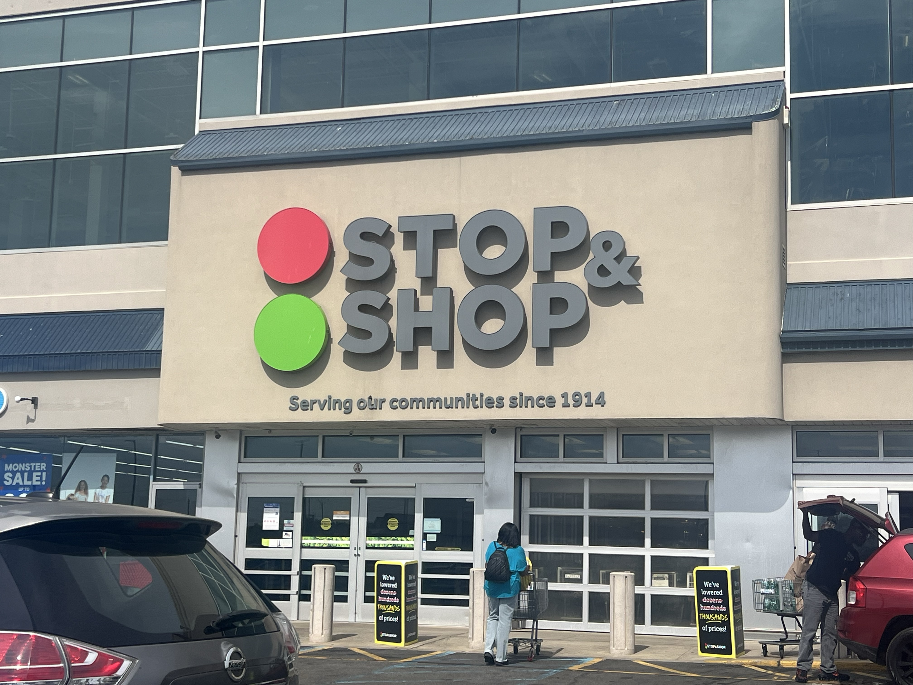
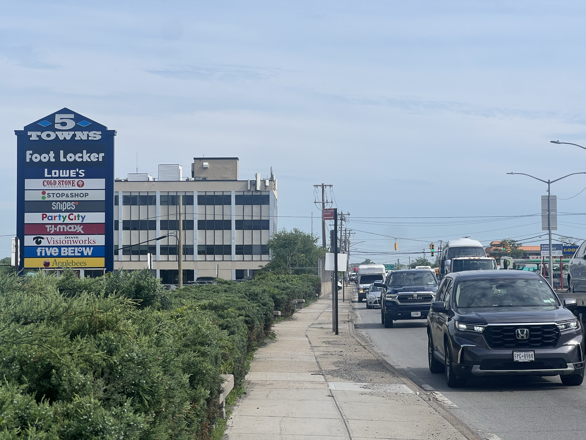
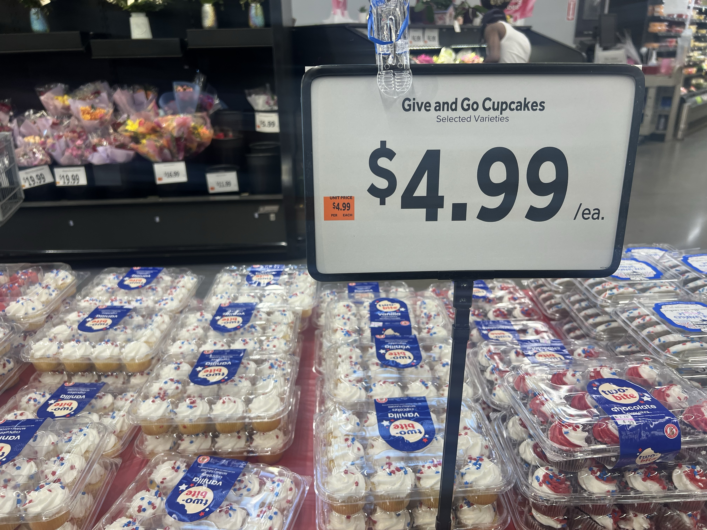

Comparing between Queens and Manhattan, Meadowmere appears to be an underestimated overweight community

It was a Wednesday afternoon where people in Meadowmere, Queens are driving to their nearest Stop & Shop to stock up their household supplies. According to the U.S. Census data, the average number of people in one household in this small neighborhood is 4.4 persons per house, which means they have to feed the whole family.
Sabria is one of them. Working in Brooklyn but living in the area, she was doing her routine grocery shopping, and had potatoes, greens, and some snacks in her hands at the store. But feeding a family of that size comes with a choice — and in Meadowmere, that choice is often limited.
“The healthy food I see here is mostly Western Indian food, which is about 75% of the food options here,” she said. “I’ve lived in a couple of different areas, but there’s a lot of fast food chains here, like Chick-Fil-A.”
“They are processed food and you know, more things here in America are a lot more processed, so, trying to pick stuff that's not as processed is tough,” she commented.
Every shop’s parking lot in this plaza called “5 Towns” is filled with cars, and the drivers appear to fit the U.S. census data that the median age is 32.5, with a large population of African-Americans and Latin-Americans. What’s worth noting is that the adult obesity rate in this area is 32.8%, far exceeding the average number in Queens.

An analysis of 5,197 census tracts across New York State, drawing on data from the U.S. Census Bureau's American Community Survey and the CDC's PLACES dataset — found that demographic and economic factors explain 57% of the variation in adult obesity rates across the state. Poverty emerged as the strongest predictor, while higher income was consistently associated with lower obesity rates.
Yet, Meadowmere was predicted to have a 15.4% obesity rate from a regression study, the actual rate rose by about 7.4%. It is a gap that demographic variables alone cannot account for.
Meadowmere’s obesity rate reached 32.8%, significantly higher than other Queens neighborhoods
Adult obesity rate
Driving and limited food accessibility became the biggest two reasons for that overweight rate to be significantly higher than other neighborhoods. Professor Anthony Ferrante, the co-founder of Columbia University’s New York Nutrition Obesity Research Center explained this.
“Social settings to be lean or to be heavy — those pressures will fall on top of access to food, and then there's the food itself,” he said. “If your only options were calorie-dense foods that lacked flavor, the common perception is that weight gain would be less significant compared to having access to high-calorie meals that actually tasted good.”

Just a few miles away, in the Far Rockaway area, the predicted and actual obesity rate is only 0.1% difference. Far Rockaway and Meadowmere share similar demographic, income levels, but there are more sidewalks and stores around.
Edward, a Lowe’s employee at the 5 Towns plaza who commutes over an hour from Jackson Heights every day, noticed the fact that getting healthy food is hard here, by the moment he started working here.
“Compared to Manhattan, people walk a lot there, but people drive a lot here — and maybe that's a reason for food accessibility here," he said, holding a $8.99 salad from Stop & Shop.
“It's cheaper to get a cheeseburger than this, this is like $8.99, and a chicken sandwich is like $4.99. So it's just more accessible,” Edward said.
He tries to make healthier choices on purpose. His doctor recently flagged high cholesterol and elevated blood sugar, prompting him to cut back on soda and processed food. But he acknowledges that not everyone around him makes the same call. “A quarter of my colleagues are kind of overweight, and they're the ones that go to Chick-fil-A," he said.
Edward also pointed to the area’s unusual geography as a factor. Sitting near the JFK Airport and bordering Nassau County, the neighborhood feels cut off. “This town is a little bit isolated from other towns. The fact that it's near the airport may add to the accessibility issue.”
The data points to structural conditions, but experts urge caution in drawing straight lines between any single factor and obesity. “The amount of fat that you have is the sum of many factors over your entire life and it is remarkably complex,” said Professor Ferrante.